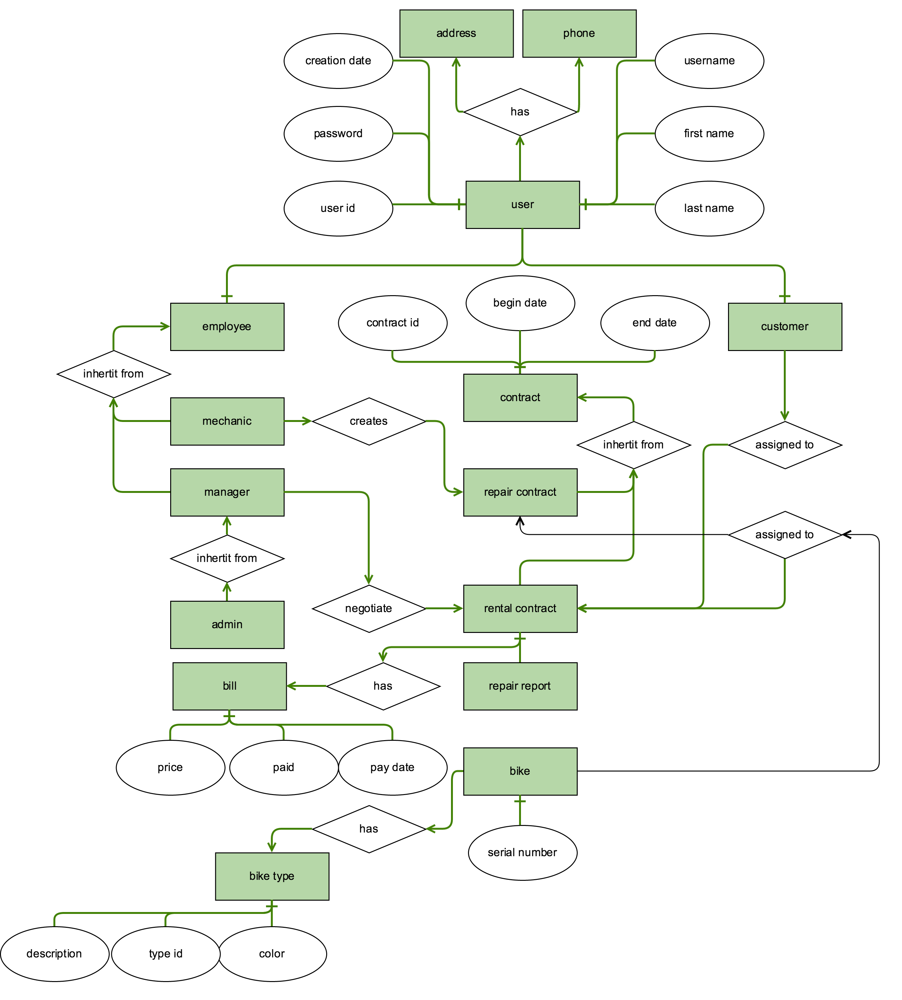
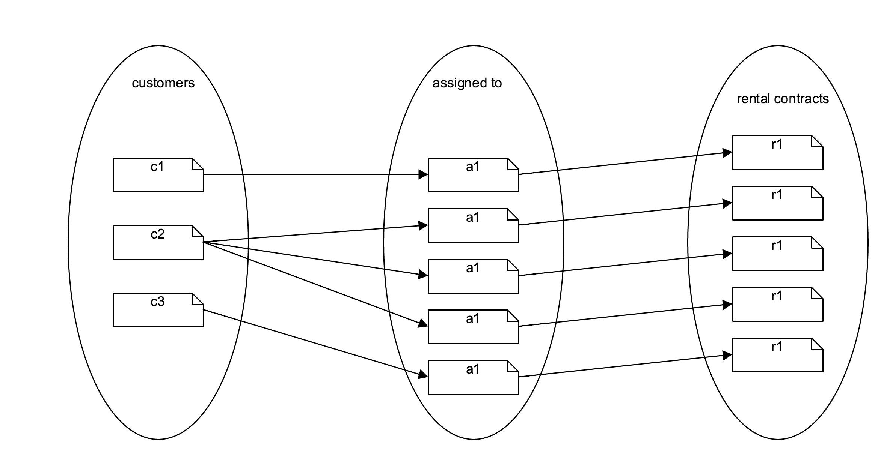
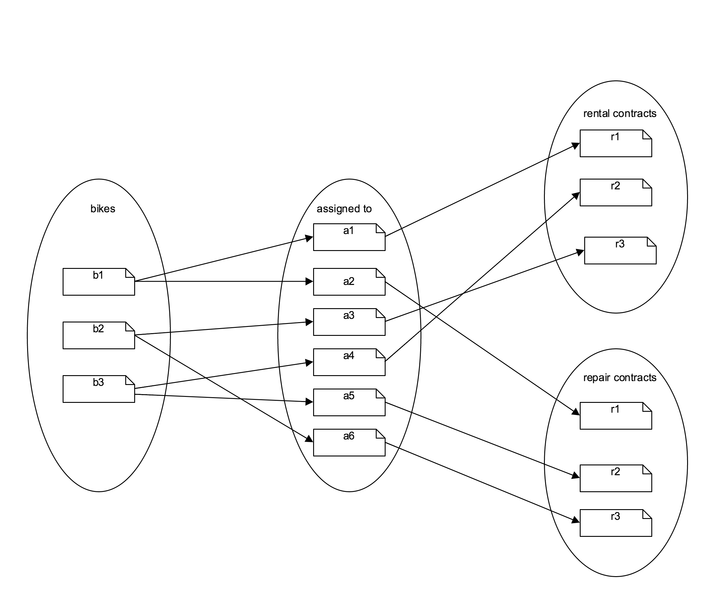

Problem solution¶
Design¶
Above you see an image of the conceptual schema created for this project. The schema describes interactions, entities, their data and their relations in a nonformal matter.
I will need a table for users holding all basic information about a system user. The user table will hold a reference to a phone number in a phone number table as well as a reference to an address in the address table. Both phone numbers and addresses can be the same for multiple users. A Bike is represented by a match between a bike type and a bike serial. It was decided that bike bike types would need its own table and therefore the bike table would just be a unique id,being the serial number and a reference to a bike type. Two different kinds of users exists: a customer and an employee. Both has to have a reference to a user. It was decided that there wouldn’t be any usecase not solved by having only Managers, Admins and Mechanics on the payrole so the employee table was fixed having all collumns needed by all employees and an extra collumn telling the kind of employee.
Customers has a 1-n relation to rental-contracts
Bikes has a m-n relation to contracts, being rental or repair. But bikes are disallowed to be part of two contracts at the same time.
Logical design¶
TODO: image Above you see the referential integrity diagram describing the creation of unique users, bikes, contracts etc
In order to have multiple types of employees i needed inheritance. In general there is two ways, if you want least redundancy, of implementing inheritance in sql, here described using the words parent, for abstract class, and child for class extending parent class.
Table Per Hierarchy Inheritance¶
Either you implement all attributes of all children in a single table with an extra attribute telling the kind of child.
Requires the application to implement logic that creates a meta layer over the existing table. This meta layer will differentiate the table into virtual sub tables, and know which attributes belong to which subclasses. This is not trivial. Might suffer in speed if there is not equality between the quantity of the children.
For example if parent a hast 10 children, where 9 of them are of type b and one of them is of type a. Then in worst case you could say that the database would have to go through one miss before finding 9 hits if searching for type b, which is regarded as fast. But it would have to go through 9 miss before finding 1 hit if searching for type a, which is awful.
Since the table must have all attributes for all sub classes it cant have required attributes that are not shared by all children. This leaves a lot of validation to the application.
Creation/deletion of new types of subclasses would require mangling with the whole table including and potentially adding/removing attributes from all instances of all subclasses.
Table Per Type Inheritance¶
Or you create an abstract parent implementing all common attributes of its children and then create a specific table for each kind of child with a reference to its Either you could have an abstract employee table that held all information shared by employees like salary, employer-id etc. And then create a new table pr type of child all having a reference to a unique row in the parent.
Requires the application to join data from multiple tables pr query. One join pr level of inheritance at the least. This is a trivial task.
Inheritance conclusion¶
I decided to use Table Per Hierachy Inheritance because i found a nice Object Relational Mapping library for Python called “pony.orm”. Pony gave me a “Pythonic” way of implementing my models and solved the underlying dificulties by using the chosen inheritance method. I chose to go against the advice of my pros/cons listed above because the system will feature a relative small amount of employees compared to customers. And the scale between the different subclasses of employees will be rather equal, except the single admin pr shop.
My final user model can be represented like this:
TODO:image
Why use ORM¶
I chose to use an ORM since it give me rapid developement of the prototype. Using the orm i was early on developing my models and able to get a god idea of the project through experimentation that using raw sql would have taken much more time. I know that using an ORM conceals the underlying data structure and obfuscates the interactions between the application and the database. However what i gain from the rapid development
Normalization¶
In order to minimize redundancy in the database it has to be normalized.
First normal form¶
The first normal form explains that you should not have tables where the manipulation of entries have ungoverned side effects. Lets look at the user table. All base information regarding the user is withheld in this class except attributes which can be shared by many users, like addresses, and phone numbers. The information of the user is atomic in the way that it is not dependent on the existence of contracts etc. A user is created and a user exists.
Second normal form¶
Tells that it is not allowed to have a partial dependency of an attribute in relation to the primary key. An example would be the user entity. The attributes of the user are dependent on its primary key and new user types can be created by refering to this key
Third normal form¶
This form is about not locking in on a too specific usecase when designing the database. In this scenario The user again is a good example since it is on its own and includes all needed attributes to represent itself. I decided early on that i wanted all users to be “users” and not different collections of “user” components. In this way you can query for a user and later evaluate which role and extra attributes this user holds.
Normalization